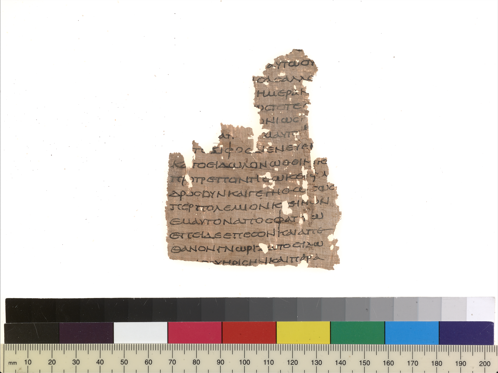
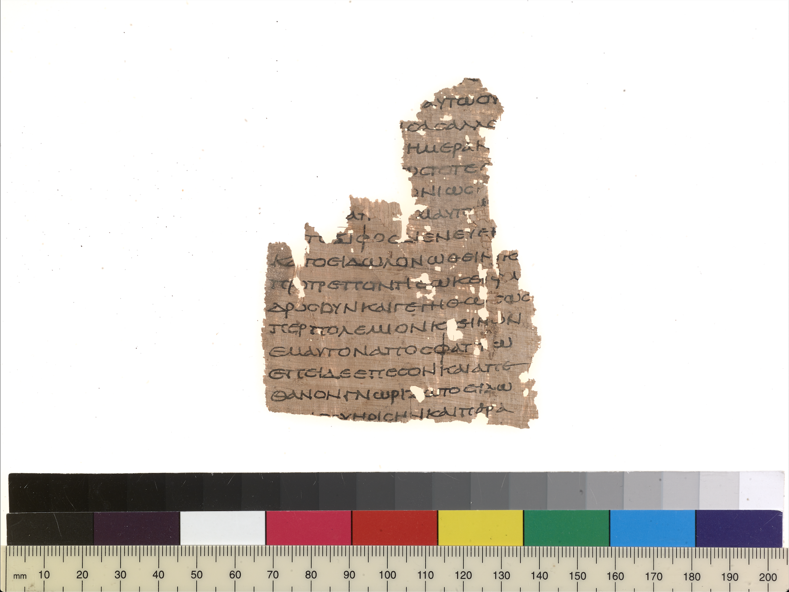
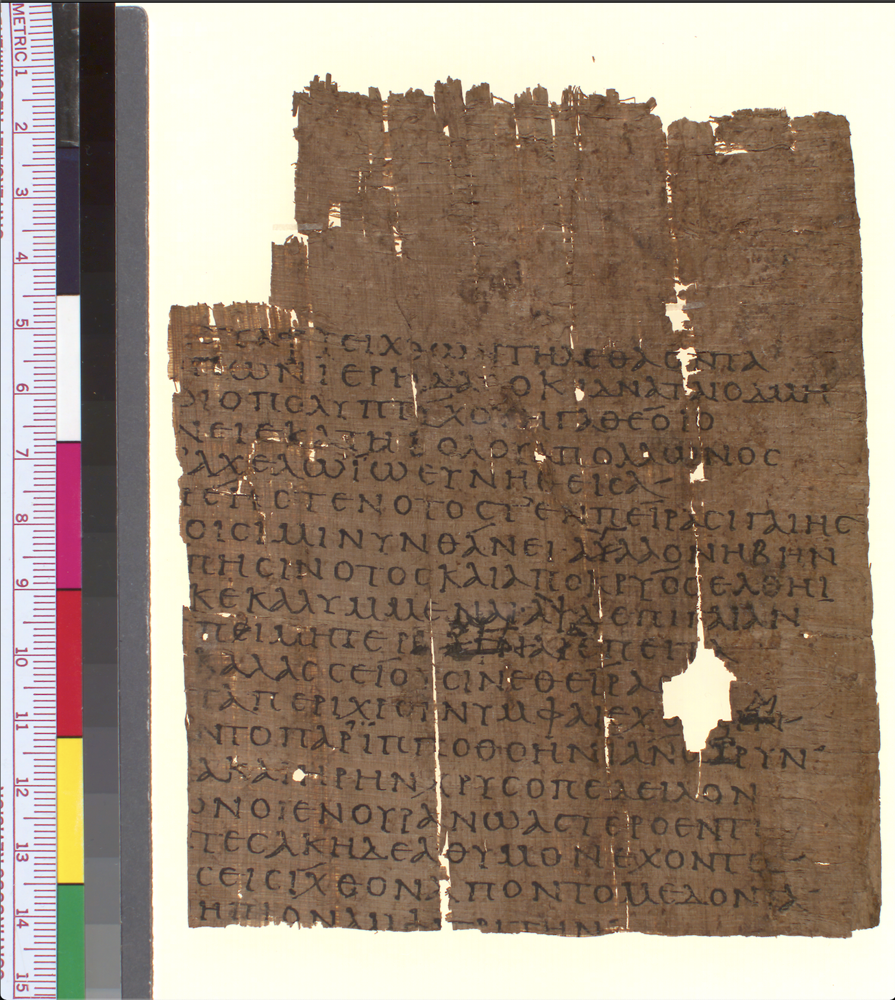
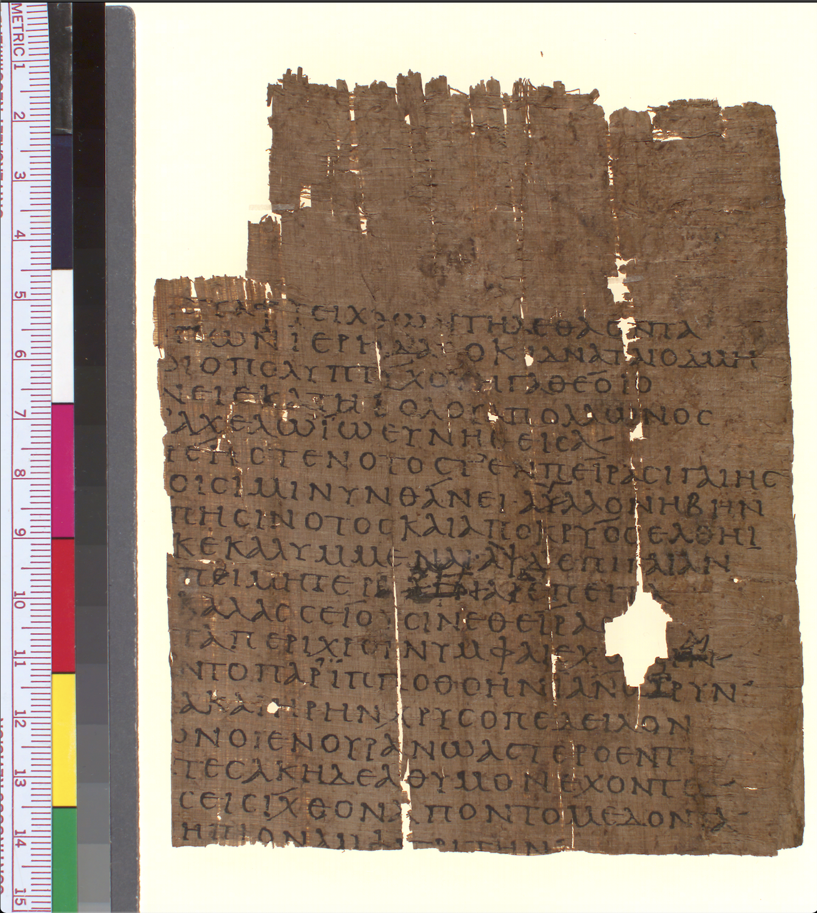

Literature in Fragments:
Lost Greek Works at Michigan
The Greek literature that survives complete in the present day largely represents the texts that were the most popular in antiquity, works like Homer’s Iliad and Euripides’ Medea. These texts were repeatedly copied throughout antiquity and the Middle Ages, ensuring their continued transmission. Literary texts on papyri, however, provide a rare opportunity to glimpse fragments of ancient literature in their original form and to discover works that were read in antiquity but did not otherwise survive into the medieval and modern periods. This includes lesser-known works by such famous authors as Aristophanes and the Greek tragedians, as well as fragments of texts whose authors remain unknown.
This exhibition, which was on display from October 8th to December 6th, 2019, presents a selection of such fragmentary literary texts from the University of Michigan’s Papyrology Collection. Although literary papyri represent a small fraction of surviving papyrus texts, they nonetheless enable scholars both to improve their readings of known literary texts and to illuminate the rich diversity of ancient Greek literature, the overwhelming majority of which has been lost to time. Each page of the online version of the exhibit will section the exhibit into three categories: Literary Prose, Epic, and Poetry.
Curated by Allison Thorsen, MSI and MA Greek candidate, with special thanks to Monica Tsuneishi, Brendan Haug, Marieka Kaye, Kristine Greive, Antonello Mastronardi, Andrew Mayo, and Matteo Milesi for their help on this exhibit.


 



 
